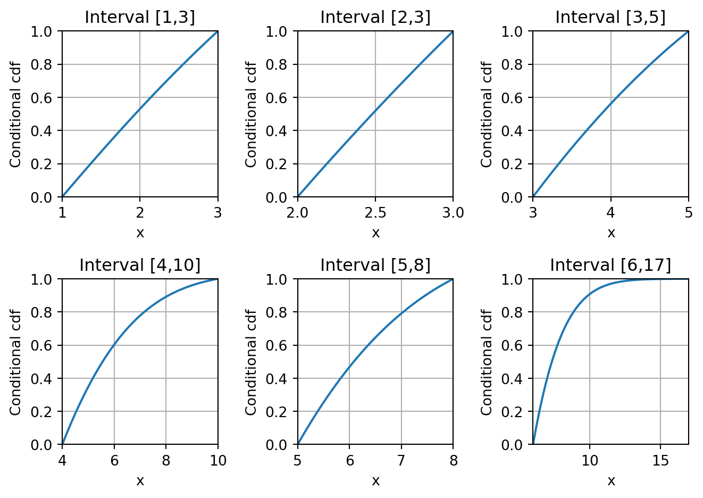

import numpy as np
def f(x,t):
return (x <= -t)*(-t) + ((x > -t) & (x < t))*x + (x >= t)*t
# Test input
x = np.array([-10,-5,-3,0,4,6,9])
t = 5
print(f(x,t)) [-5 -5 -3 0 4 5 5]
Given a number x and a number t \in \mathbb{R}_{\geq 0}, the truncation function f is defined by f(x) = \left\{ \begin{array}{ll} -t & \text{ if } x \leq -t \\ x & \text{ if } -t < x < t \\ t & \text{ if } x \geq t \end{array} \right.
Write a function f() that takes as input a one-dimensional array x = [x_0,\dots,x_{n-1}] \in \mathbb{R}^n and a number t \in \mathbb{R}_{\geq 0}. It should output the one-dimensional array [f(x_0),\dots,f(x_{n-1})]. Do not use for-loops, if- and while-statements.
For x = [-10,-5,-3,0,4,6,9] the output should be [-5, -5,-3,0,4,5,5].
import numpy as np
def f(x,t):
return (x <= -t)*(-t) + ((x > -t) & (x < t))*x + (x >= t)*t
# Test input
x = np.array([-10,-5,-3,0,4,6,9])
t = 5
print(f(x,t)) [-5 -5 -3 0 4 5 5]Write a function quantities() that takes as input a one-dimensional array b \in \mathbb{R}^n, and a two-dimensional n \times n array A\in \mathbb{R}^{n \times n} where the entry at position (i,j) is denotes by a_{ij} for i,j = 0,\dots,n-1. It should output the following two quantities:
Do not use for-loops.
For b = [-1,1,2] and A = [[-5,4,9],[1,1,1],[2,1,4]], the output should be [-2,6,14] and [0.625, 0.25, 0.125].
def quantities(b,A):
first = np.sum(A,axis=0)
second = np.linalg.inv(A) @ b
return first, second
# Test input
b = np.array([-1,1,2])
A = np.array([[-5,4,9],[1,1,1],[2,1,4]])
first, second = quantities(b,A)
print(first)
print(second)[-2 6 14]
[0.625 0.25 0.125]For a given continuous probability distribution with cumulative density function (cdf) F : \mathbb{R} \rightarrow [0,1], the cdf conditioned on the interval [a,b] \subseteq \mathbb{R}, with a < b, is given by the function F_{\text{cond}}(x) = \frac{F(x) - F(a)}{F(b) - F(a)} for x \in [a,b].
cond_distr() that takes as input a continuous probability distribution (a stats.rv_continuous object), numbers a,b\in \R with a < b, and x \in [a,b]. It should output F_{\text{cond}}(x).def cond_distr(x,a,b,dist):
return (dist.cdf(x)-dist.cdf(a))/(dist.cdf(b)-dist.cdf(a))import scipy.stats as stats
dist = stats.expon(scale=5)
a = 2
b = 4
x = 3.5
print(cond_distr(x,a,b,dist))0.7861617796340155cond_plots() that takes as input the arrays A and B, and a continuous probability distribution. It should output a figure with an m \times n grid of subplots, where the subplot at position (i,j) is the function F_{\text{cond}}(x) plotted on the domain x \in [a_{ij},b_{ij}] (i.e., the x-axis ranges from a_{ij} to b_{ij}). It should have the interval range in the title of the subplot and appropriate x- and y-labels and ranges (see example below).import matplotlib.pyplot as plt
def cond_plots(A,B,dist):
m, n = np.shape(A)
fig, ax = plt.subplots(m,n)
for i in range(m):
for j in range(n):
a, b = A[i,j], B[i,j]
x = np.linspace(a,b)
ax[i,j].plot(x,cond_distr(x,a,b,dist))
ax[i,j].set_xlim(a,b)
ax[i,j].set_ylim(0,1)
ax[i,j].set_xlabel("x")
ax[i,j].set_ylabel("Conditional cdf")
ax[i,j].set_title("Interval [%.i,%.i]" % (a,b))
ax[i,j].grid()
# Tighten layout
plt.tight_layout()
# Show plot
plt.show()
return
A = np.array([[1,2,3],[4,5,6]])
B = np.array([[3,3,5],[10,8,17]])
dist = stats.halfnorm(loc=0,scale=4)
cond_plots(A,B,dist)
For given one-dimensional arrays a = [a_0,\dots,a_{n-1}], b = [b_0,\dots,b_{n-1}] \in \mathbb{R}^n, consider the function f : \mathbb{R}^n \rightarrow \mathbb{R} defined by f_{a,b}(x_0,\dots,x_{n-1}) = \prod_{i=0}^{n-1} \sin(a_ix_i + b_i) As an example, for n = 3, we get a product of three sine functions as follows: f_{a,b}(x_0,x_1,x_2) = \sin(a_0x_0 + b_0)\sin(a_1x_1 + b_1)\sin(a_2x_2 + b_2).
f() that takes as input one-dimensional arrays x,a,b \in \mathbb{R}^n and outputs the function value f_{a,b}(x_0,\dots,x_{n-1}). Do not use for-loops, if- and while statements in your solution. import numpy as np
def f(x,a,b):
return np.prod(np.sin(a*x+ b))
x = np.array([1,2,3])
a = np.array([1,3,5])
b = np.array([3,5,6])
print(f(x,a,b)) 0.6331768739111953best_minimum() that takes as input arrays a,b \in \mathbb{R}^n and a two-dimensional array q \in \mathbb{R}^{k \times n}. It should run the function minimize() from SciPy’s optimize module k times, where every run uses one of the rows of q as initial guess. The function should output the best found minimizer, and its function value, over the k runs.from scipy import optimize
def best_minimum(a,b,q):
minimum = np.inf
minimizer = q[0]
for i in q:
result = optimize.minimize(f, x0=i, args=(a,b))
if result.success==True and result.fun < minimum:
minimizer = result.x
minimum = result.fun
return minimizer, minimumbest_minimum().The best found minimizer of the function f is given by [-0.42920367 7.99557428] and has objective value -1.0#Creating initial estimates matrix
g1 = np.zeros(10)
g2 = np.arange(0,19,2)
q = np.vstack((g1,g2)).T
#Function parameters
a = np.array([1,1])
b = np.array([2,3])
#Testing function and printing solution
[point, value] = best_minimum(a,b,q)
print("The best found minimizer of the function f is given by",point,"and has objective value",value)The best found minimizer of the function f is given by [-0.42920367 7.99557428] and has objective value -1.0